GitHub 新建仓库完整教程：从注册到上传教程图片
这篇教程专门写给第一次使用 GitHub 的新手。你不需要先懂代码，只要跟着图片一步一步操作，就能创建自己的 AIHubTools 仓库，并学会把 HTML 教程文件、教程配图上传到正确目录。
这篇教程会完成哪些操作
- 注册或登录 GitHub 账号
- 创建公开仓库 AIHubTools
- 认识仓库首页和文件入口
- 上传 HTML 教程文件到
tutorials/ - 上传教程图片到
images/tutorials/或子目录
一、注册或登录 GitHub
打开 GitHub 后，如果你还没有账号，可以先注册。页面会让你填写 Email、Password、Username 和 Country/Region。用户名以后会出现在仓库链接里，所以建议简单、好记、不要太长。
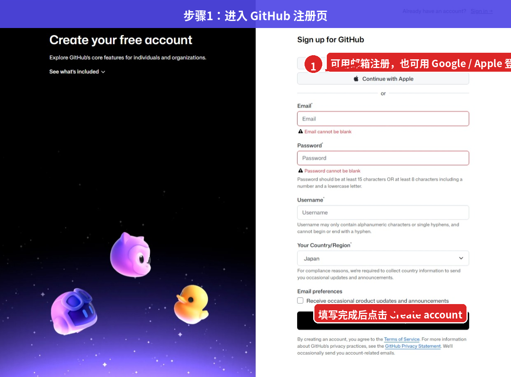
如果你选择用 Apple 登录，会跳转到 Apple 账号页面。这里按照提示输入 Apple ID、验证码，并确认是否信任浏览器即可。
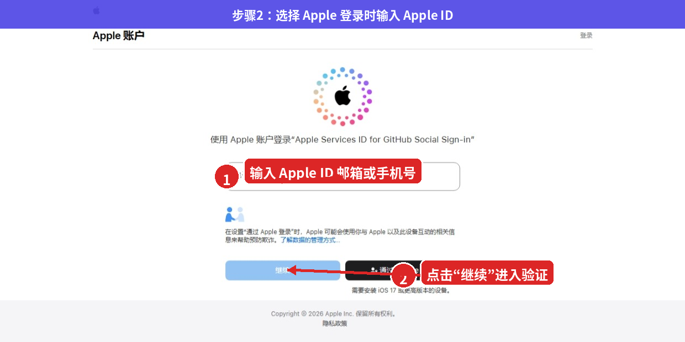
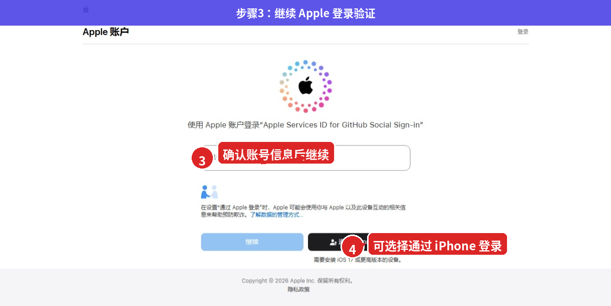
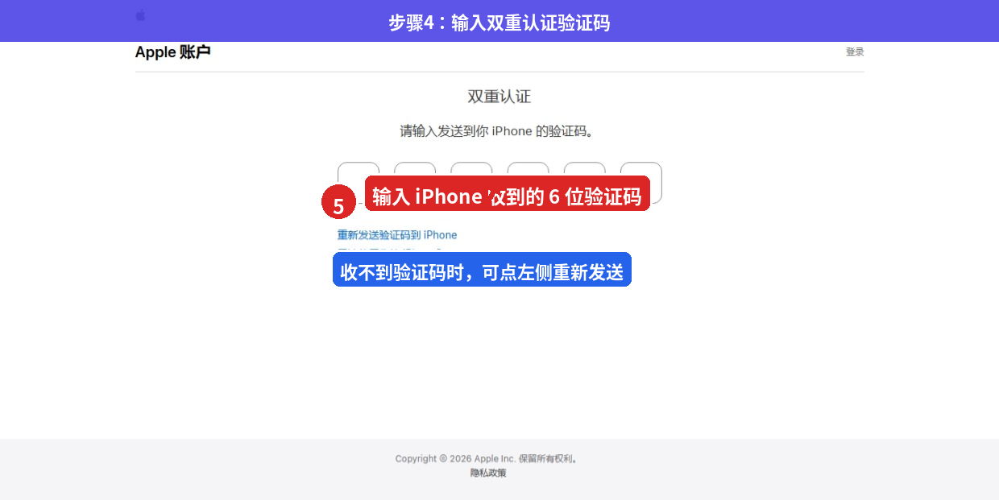
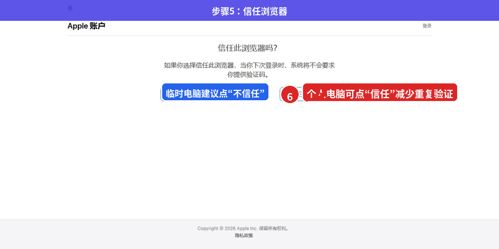
二、创建 AIHubTools 仓库
登录成功后，进入 GitHub 首页。右上角有一个加号按钮，点击后选择 New repository。不要点成 New issue，因为 Issue 是记录问题和任务，不是创建项目仓库。
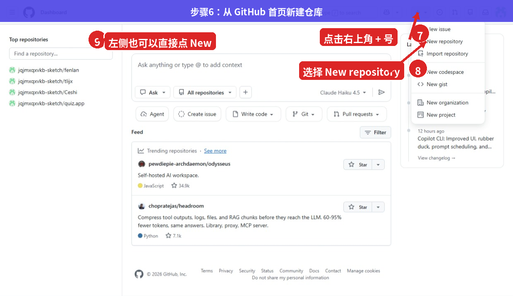
进入创建仓库页面后，重点检查三个地方：Owner 是否是你的账号、Repository name 是否填写 AIHubTools、Visibility 是否选择 Public。如果你准备做公开网站，Public 更适合 GitHub Pages。
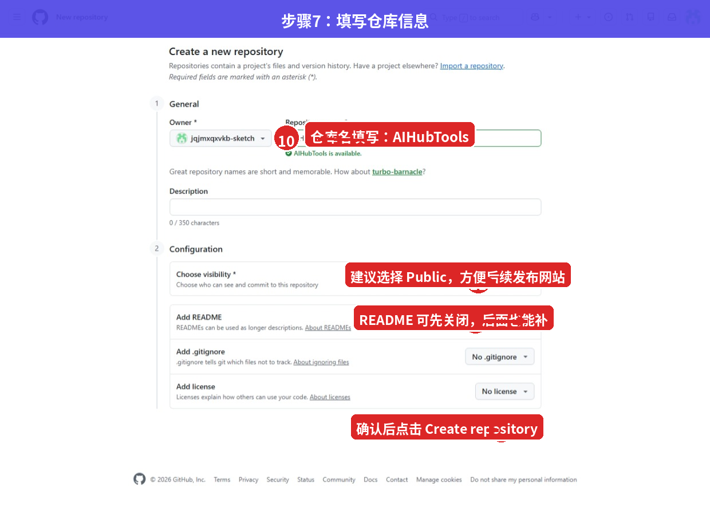
确认 Owner
Owner 表示仓库属于谁。个人项目通常选择自己的 GitHub 账号。
填写仓库名称
在 Repository name 中填写 AIHubTools。建议大小写统一，后续写链接和教程更清楚。
选择 Public
如果这个仓库要作为公开网站使用，建议选择 Public。
点击 Create repository
确认无误后点击绿色按钮，仓库就会创建完成。
三、认识仓库创建成功后的页面
仓库创建成功后，会看到 Quick setup 页面。出现这个页面，就说明 AIHubTools 仓库已经建立好了。后面你可以从这里创建文件、上传文件，或者复制仓库地址。
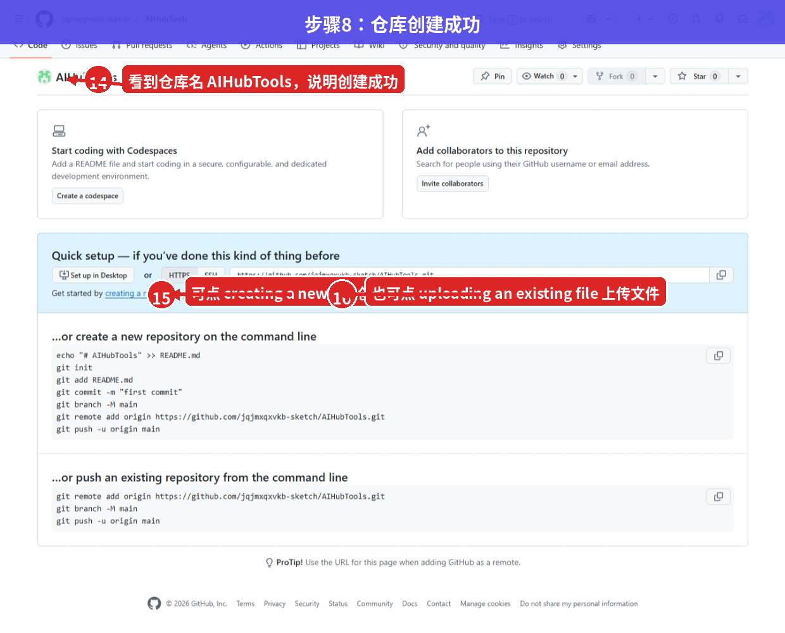
如果你想先测试仓库能不能保存文件，可以点击 creating a new file。进入新建文件页面后，顶部输入文件名，下面输入内容，最后点击 Commit changes 保存。
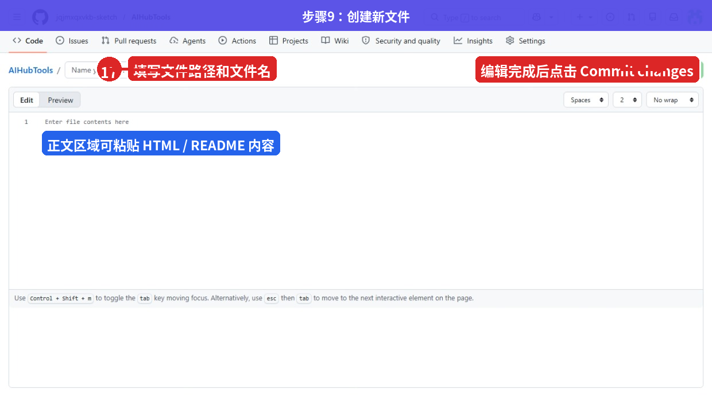
四、上传 HTML 教程文件到仓库
AIHubTools 的教程页面建议统一放在 tutorials/ 目录。例如这篇教程可以放在：
tutorials/github-create-repo-aihubtools.html上传 HTML 文件时，先进入目标仓库，点击 Add file，再选择 Upload files。如果你已经在本地准备好了 HTML 文件，直接拖进去即可。
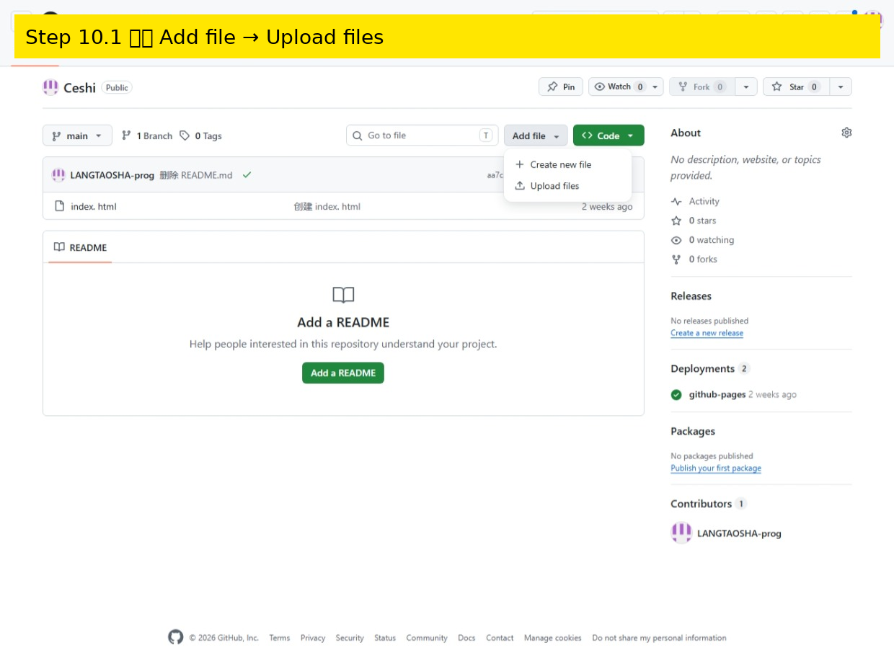
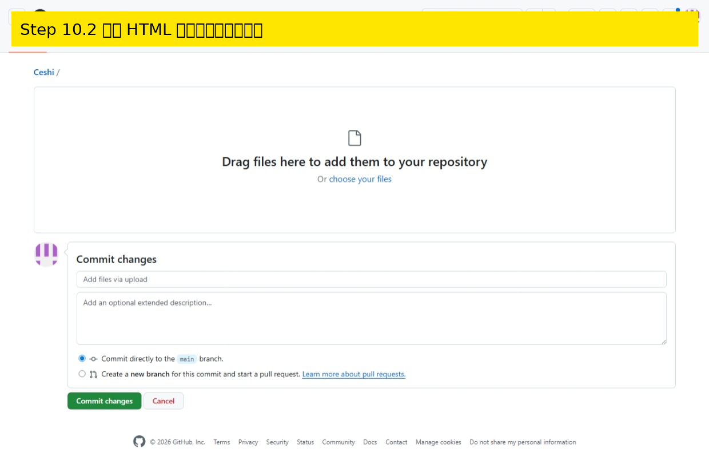
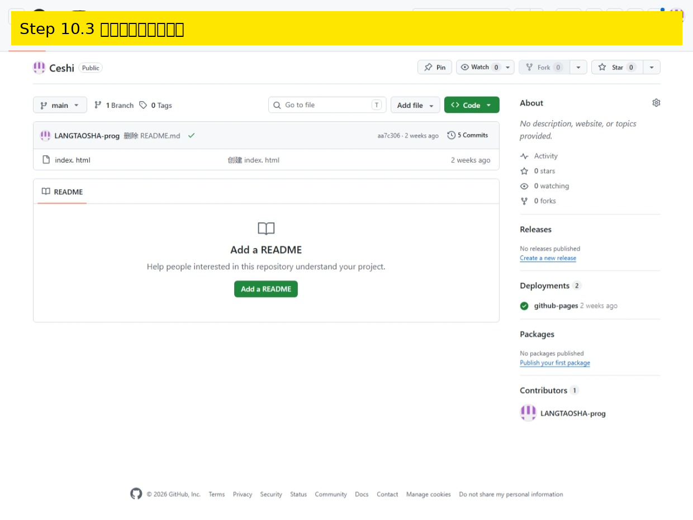
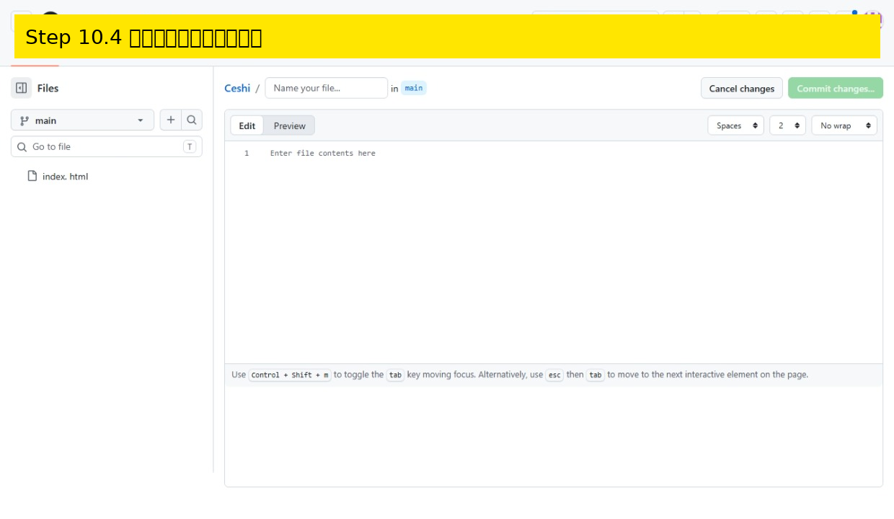
tutorials/ 目录后，访问路径一般是 https://用户名.github.io/仓库名/tutorials/文件名.html。五、上传教程图片到指定目录
教程图片不要随便放在根目录。为了后期方便管理，建议统一放到：
images/tutorials/github-create-repo/这样 HTML 教程里引用图片时，路径就比较清楚。例如教程文件在 tutorials/ 目录，图片在 images/tutorials/github-create-repo/ 目录，那么 HTML 中可以这样写：
<img src="../images/tutorials/github-create-repo/图片名.png" alt="图片说明">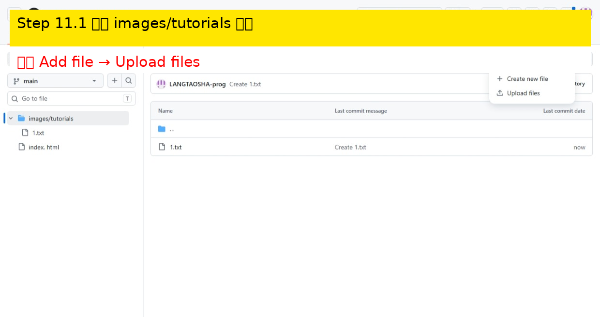
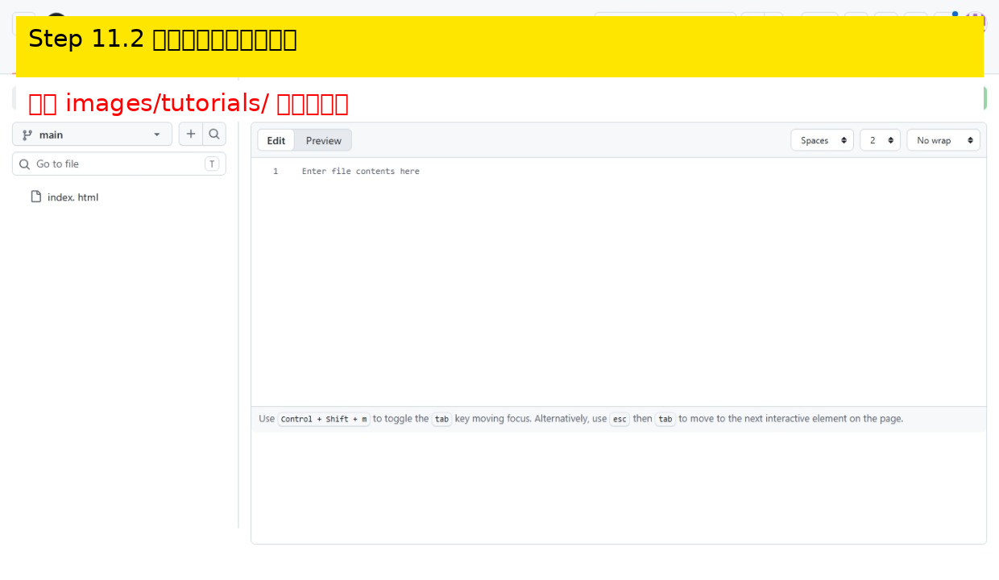
github-repo-step-11-upload-image-01.png。不要使用空格、中文标点或太长的随机名称。六、后续图片和页面怎么放
当你的教程越来越多时，目录一定要提前规划好。建议 HTML 页面统一放在 tutorials/，图片统一放在 images/tutorials/教程名/，这样主页、教程中心、单篇教程之间的链接都更稳定。
tutorials/github-create-repo-aihubtools.htmlimages/tutorials/github-create-repo/github-repo-step-01-signup-page.pngimages/tutorials/github-create-repo/github-repo-step-10-upload-html-01.png
后面如果你继续添加 ChatGPT、Claude、DeepSeek 等教程，也可以沿用同样结构。这样不会因为图片太多导致仓库混乱，也方便你以后批量检查 404 问题。
写给第一次使用 GitHub 的你
刚开始用 GitHub 时，看见很多英文按钮很正常，不用着急把每个功能都学完。你只要先记住一条主线：创建仓库 → 上传 HTML → 上传图片 → 检查路径 → 打开 GitHub Pages 页面。把这条流程跑通之后，后面添加更多工具页和教程页就会轻松很多。
对于 AIHubTools 来说，最重要的是保持目录清晰。教程页面放 tutorials/，教程图片放 images/tutorials/，数据文件放根目录。只要这个规则固定下来，后面维护网站、排查链接、更新教程都会更省心。